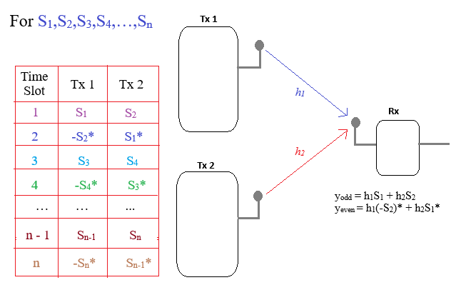

Instructions for Alamouti Scheme using BPSK (Passband)
Step 1: Click on 'Generate Message' button to generate input message signal
Step 2: Then click on 'Generate NRZ' button to generate NRZ signal for message. NRZ simplifies the processing of binary data, including the Alamouti space-time block coding (STBC). Each BPSK-modulated symbol in the Alamouti scheme is either a +1 or -1, and NRZ encoding aligns perfectly with this binary structure, making it easier to map and process the transmitted symbols.
Step 3: Click on 'Show Transmitted Signal from Antenna 1' button to generate signal for odd time slot
Step 4: Click on 'Show Transmitted Signal from Antenna 2' button to generate signal for even time slot
Step 5: Click on 'Show Channel Coefficeints' to show Rayleigh Fading Channel Coefficients

Channel Matrix
h11 =
+j.
h21 =
+j.
SNR (dB)
BER
Instructions for Alamouti Demodulation
Step 1: Click on 'Show Received Signal' button to show receied signal at odd and even time slots
Step 2: You can Demodulate the Alamouti clicking on the 'Perform Demodulation' button